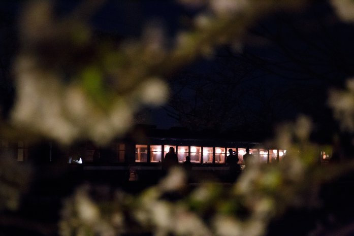

| Chocolate vol.14 | |
| 鈴木詩織 | |
| (2018) | |
Chocolate vol.14
二〇一八年五月一日
今月で私は二十八歳になります。そろそろ三十代という大台を意識してしまう。
願わくば、清く生きていきたいものです。変に不幸に染まらず、不幸に汚れず、不幸に負けない。
まっすぐに、すっと立ったまま生きていきたい。
自分の軸をしっかりと持ち、自分がこの世でやるべきだと感じている使命を果たしていく。
周りに惑わされず、しっかりと自分の足で立つ。
そうやって生きていく。
今は何かと心がふらふらして、他人のとやかく言うのに惑わされてしまうところがあります。すぐにネガティブになって、不幸な気分になって、折れそうになる。
清く生きる、清く老いる。
そのためにももっと、自分の使命−−−−ものをつくっていく−−−−に集中しなければ。
もっとまっすぐに立って生きていきたい。
何かと他人を汚そうとしてああだこうだ言ってくる人が多い世の中で、簡単に他人にああだこうだと言えてしまう世の中で、それは難しいことなのかもしれないけれど。
私は不幸に折れずにこの先まっすぐ立って歩んでいきます。
元から中国史が好きでした。中学三年生の時に国語の教科書で「項羽と劉邦」のお話を知って、それからいろいろな小説を読み始めて、歴史書や古典を読むようになって。高校生になっても「中国史オタクの鈴木さん」として知られて、卒業アルバムには「四十歳くらいで『三国志』を書く」と書き、寄せ書きには友達に「オタク道を極めてね」と書かれました。
極めてやろうじゃないの......！
『三国志』を書くのも、『項羽と劉邦』を書くのも、ずっと夢でした。司馬遼太郎や陳舜臣、吉川英治に北方謙三。漫画だったら横山光輝。その人たちに「鈴木詩織」の名を連ねる。それがずっと目標で。
順番で言えば、『項羽と劉邦』を書いてから『三国志』を書いた方がいい気がする。歴史的な知識を身につける順番もあるし、なんだかんだ言って『三国志』の方が長い物語にはなるし。
その土台を作るためのミスコンやモデルや電子書籍の活動でした。「美人歴史小説家」としての土台作り。
電子書籍出版の活動は実はもう五年になります。「鈴木詩織」として活動する前にも、別のペンネームで書いていたりはしました。そうやって電子書籍での出版活動を続けていると出版業界の動向というのが肌で感じられて。
「これからの時代、やったもん勝ちだな！」
と思うようになって。だんだん自分の作品に値をつけて世に出すことに抵抗がなくなって。むしろそういう抵抗がない人が作家とか漫画家とかを続けていけるのではないかと考えるようになって。
それと同時に私の主な活動場所であ る kindl e の仕組みなども分かってきて。これが分かったきっかけは『昔話』と『刎頸の交わり』の出版でした。何作も作品を出版しなければ分からないことでした。
本当はもっともっとじっくりと準備をして、『項羽と劉邦』書くつもりでした。私の技術もまだまだ未熟なところはあるし。
ただ、私の思い描く『項羽と劉邦』を書くなら、今しかない。他にライバルがまだ少ない今しかない。
私が書きたいのは、「昔話を読むみたいに読める歴史小説」です。軽い気持ちでぱぱっと暇つぶしに読めちゃうような歴史小説。一話完結の歴史小説を何作も書いて、それで一つのまとまりとしての『項羽と劉邦』ができあがる......みたいなイメージです。
項羽と劉邦の戦いを描いた歴史短編小説の連載をしていきたい。
これをやってる人も、このアイディアがある人も、これが実際にできる人も、多分今の出版業界には私しかいません。歴史が好きで、文章が書けて、それを定期的に発表する。それはごく限られた人にしかできない。
私が見つけた青く穏やかな海の楽園です。
だから書きます。
一年間 『 Chocolat e 』を正確に連載を続けることができたのも、自信になりました。 『 Chocolat e 』でできるなら、短編小説の連載だってできる。
おそらく二十代最後の挑戦になります。お金とか、時間とか、いろいろなものを賭けて挑みます。自分の全力を注いで、『項羽と劉邦』を書きます。
「これで上手くいかなかったら......」
なんて不安になることもあるし、悲観しすぎて落ち込むことだってあります。
「本当にこんなことをしていてもいいのか？」
私も二十八歳です。周りの友達やなんかは会社に立派に勤めています。私は不安定な低収入なままです。そんな二十八歳でいいのかと言う疑問は小さくありません。周りに比べて満足に稼げていない私が、お金を賭けてでも夢を追いかける、夢を叶える何て言っていてもいいのか。作品作りに取り組んでいてもいいのか。
そんな疑問は常にあります。
ましてや今までに何度も失敗はしてきました。 『 Chocolat e 』だって決して「成功例」ではありません。結局のところ自分が楽しくてやっているにすぎません。同じ時期に「夢を叶える」と言って自分のやりたいことをやり始めた友達と比べても、私の伸び率はイマイチなように見えます。「他人と比べても仕方がない」とは言われているものの、私の伸び率の低さはしっかりと向き合って考えていかなければならないとも思います。そして苦しくなる。
そんな中で「前向きな姿勢」を保ち続けるのは大変で。時々ポキンと折れてしまいそうにはなります。
それでも私は書きたいんです。ずっと書くのが夢だった作品を、ライバルがまだ少ない今書きたい。書かなければならない。
私は「私は文章を書くために生まれた人間だ」という自覚があります。自分のことを「文章を書いて自分もハッピー他人もハッピーになれる人間」だと思っています。
もう、最近では体が勝手に文章を書いてしまうんです。
周りのことを気にせず、もっともっと文章を書くことに集中すれば、私ももっともっとうまくいくのかもしれません。それができるほど器用でないから、苦労をする。
いろいろな不安とかしがらみとかは抱えています。
それでも書きたい。
自分の夢を叶えたい。
だから書きます。自分で自分の夢を叶えます。
それを許してくれる夫と、やろうとさえ思えばできてしまう今の環境に感謝をしつつ。
二十代の全てをかけて、夢を叶えていこうと思います。
人前に出さないように注意はしているものの、何かと嫉妬深い私です。本当にそれが人前に出てるんじゃないかって不安いなることはよくあります。
特 に SN S なんかを見ていると、時々悪いことを考えてしまう。一見成功してそうな人を見て、
「どうせ今だけでしょ」
なんて負け惜しみみたいなことを心で思ってしまう。
そうやってすぐに負け惜しみのセリフが出てくる自分の心も嫌いだし、そうやって思うことが間違っているということも自分では分かっています。分かっているけれどそのコントロールが難しいというのが人間の性で。
だから自分が他人の成功を見た瞬間に負け惜しみを心の中でつぶやいた時には、
「いやいや、今の私、この人のこと本当に表面的な部分でしか見てないな」
って思うようにしています。
そもそも私だっ て SN S を更新してる時にいつも前向きなわけではありません。投稿内容は前向きでも、本心はすごく落ち込んでいるということはよくあります。
ミスコンに挑戦していた時なんかも、「今日はスポンサー様よりいただいた〇〇を使ってみました。とっても良かったです☆」みたいな投稿を泣きながらしていたことが何度あったか。本当にいつも笑顔 で SN S 投稿をしていたわけではありません。投稿内容と投稿する時の顔が一致していないことは今でもよくあります。
まさか「こうしてキラキラと活躍している投稿をしていても、本当は不幸のどん底なんだろう」とまで考えるほど、私も黒くはありません。確かに嫉妬深く、今書いている文章は自分の嫉妬深さについて書くものですが、さすがに他人の不幸をそこまで強く望むほどには嫉妬深くない。
ただ自分の経験から、一見キラキラの投稿をしていても投稿主が本当はどんな状況に置かれているのかということは分からない、ということは頭に入れてあります。このキラキラ投稿の背景に、一体どれくらいの苦労が隠されているか。そんなことは分かりっこないんです。分かりっこないということが、分かりきっている。
だか ら SN S の投稿をぱっと見ただけで、その人の本当のことを知った気になって嫉妬するのはちょっと視野が狭すぎるなぁと思います。他人のことを嫉妬する時って、本当に相手の表面的な部分しか見ていなくて。しかも嫉妬する自分を正当化するために、相手の本当の部分を知ろうともしない。
自分が嫉妬深いという自覚がある一方で、嫉妬の本質というのもよく考えたりはするので、つくづく嫉妬って無意味だと思います。
相手のとても表面的な部分だけを見て、しかも本当のことを知ろうともしないで、自分の気持ちを左右されてしまうなんて馬鹿馬鹿しい。
だから嫉妬の負け惜しみのセリフがぱっと出てきた時には、自己嫌悪もするけれどすぐに冷静になろうとしています。
そして、嫉妬する自分が嫌いなので、
「私は、本当はこの人のことを『すごい』って認めてあげられるようになりたい。素直に他人を尊敬できるようになりたい」
って願います。
表面的なことで負け惜しみを言って、他人の不幸を望んでしまう自分が嫌いな私は、「他人を尊敬できる人になりたい」と願う。
心って、本当は「思いたいことを思えて、感じたいことを感じられるもの」なのだそうです。「これを『好き』と思いたい」なら、「好き」って思えるし、思ってもいい。そういうもの。
だから今の嫉妬深い私は、とりあえず「人の不幸を望みたくない」と思ってはいて、さらに「人を尊敬したい」とも思っているわけで。だから嫉妬深くはあるけれど、少しずつ良くなってはいくのかなと、自分を全否定せずに前向きな姿勢を保つようにしています。
さらに、自分の仕事に一生懸命取り組んでいる時って、他人にああだこうだと言わなくなるんですよね。他人に嫉妬することもなくなる。
「今の私、すごく前進してる。毎日仕事に取り組んでて楽しい！」
そんな感覚を噛み締めながら生きている時って 、 SN S の他人のキラキラ投稿を見ても「すごいな」くらいにしか思わない。いちいち負け惜しみなんか出てこない。
他人に嫉妬してしまうってことは、自分の仕事への取り組み方にも何か問題があるのかもしれません。
今の生活を始めて三年目になろうとしています。本格的に「モデル・作家」を名乗って三年。そろそろ「新人」とは言えなくなってくる頃。「モデル」に関してはちょっと想像以上にキャリアを積むのが難しくて、正直恥ずかしくなることもあります。
けれども「作家」に関してはもう「新人」とは言えない気がしています。技術的な部分はもっともっと磨いていかなければなりませんが、それでも作家としてのキャリアは納得できるくらいに積んできたのだという自負がある。ものの書き方とか、本の作り方とか、作家としての心構えだとか、自分なりにたくさん考えてきてそれが自分の中にしっかりと育ちつつあります。仮に「教えて欲しい」という後輩らしき人が現れたら、教えられるかもしれません。
収入面に不安な要素は多々あるものの、今恵まれた環境にいると思います。今私の周りを取り囲む環境は、数年前に会社で泣きながら「欲しい」と願った環境でした。
「こんな環境が欲しい。絶対に手に入れてやる」
あの時、会社に搾取されて悔し泣きをしながら、頭の中で「絶対に手に入れる生活」を思い描いていました。
それが叶っている。
本当にありがたいことです。
確かに収入面では不安な部分もあります。時々ものすごくネガティブになってしまうことも。
「この収入では今の生活を将来的には失ってしまう」
そんな、「今の生活を失う恐怖」と戦うことも月に何度かあります。
世に多く出回っている「成功者の法則」とか「お金持ちになるには」みたいな本には、「そういう執着をなくしましょう」と書いてあるのではないでしょうか。多分私は「足るを知る」ということをもっと身につけていけば、この生活をもっと安定したものにしていけるのでしょう。
なんだかんだ言って、今幸せです。何度も言うけれど、収入面が不安定なので「成功者」と言えるのかどうかは分からないけれど、今の私は周りから見ても「（嫉妬しちゃうくらい）幸せ」なんじゃないかな。収入なんて自分の口から言わなければいいことなので、黙っていれば「鈴木さんは成功者」なんて言ってもらえるかもしれませんね。
本当に「やりたいことはやったもん勝ち」なのかもしれません。今の温かな生活は、前の会社に我慢して勤めていたらありえないものです。
自分のなりたい姿、理想の生活像を強く思い描いて、「絶対にそれを手にしてやる！」と決めて、そこに行き着くまでの手順を考えて、こなしていく。本当にそれで思い描いた理想は叶うのだと、最近実感しました。
本当に今、こうして文章を書いて生きていけることがありがたいです。
やりたいことはやったもん勝ち。
本当にそう思います。
......あと少し、収入コンプレックスがなくなったら、周りの友人たちにも勧めるんですけど。
二〇一八年三月三十一日は、私たち夫婦にとって付き合って八年目の記念日でした。二〇一〇年のこの日に私たちは付き合い始めて、ここまできました。
まさかここまで続くなんて二人とも思っていなくて。お互い初カレ初カノジョだったから、「初めてだし、三ヶ月くらい続いたら上出来なのかな」くらい思っていました。もちろん付き合い始めた当初なんかは「この人と結婚する！」なんてことを思ったこともあったし、そんなことを冗談めかして言い合ったりもしていました。けれども頭の中で「こんなの幼稚園児の『大人になったら結婚する』レベルの話だろう」と思っていました。付き合い始めて浮かれているだけ、そんな風に考えるだけの冷静さはありました。
それが本当に結婚もしていたのでビビります。
八年間、別れていた時期もあったけれど、なんだかんだで仲良くやってきたのだと思います。このままずっと仲良くやっていけるように、お互いのことを大切にしていきます。
今年の八年記念日は普通にデートをして終わりました。八年、結婚して始めての記念日ということで「特別なことをしよう」という話もなく。
土曜日でしたが、午前中夫は仕事があって出勤。だから私も自分の仕事に取り組んでいました。
午後、夫が帰ってきてからデートです。軽く昼ご飯を食べてから家を出ました。
行き先は、付き合い始めた頃から月に一〜二度は行っている、静岡県の大井川鉄道へ。その日は夜桜の中 を S L が特別に走るとのことでした。鉄オタの夫は逃すわけがなく。私もそれについて行って。
今年は例年に比べて桜の開花が早かった気がします。大井川鉄道に向かう途中の新東名上り線の周囲の山々も、山桜で色づいていました。
夕方から大井川鉄道沿線で撮影をします 。 S L の撮影スポットを転々と。
桜は満開で、その中を走 る S L は幻想的でした。銀河鉄道ならぬ、夜桜鉄道。いつも見てい た S L がなんとなく妖艶な雰囲気を纏っているような。

今回は撮り鉄でしたが、いつか乗ってみたい。
写真を撮るのはとても楽しかったです。どう撮ってもいい写真が撮れる夜でした。ほんの少しアングルを変えるだけで、風景が変わる。風景が面白い表情を見せてくれる。そんな中で二人で並んでシャッターを切って。
私たちにとってありきたりなデート。特別な演出は一切ありません。それでも大成功なデートでした。
天気に恵まれたのと、桜の開花に恵まれたのと、イベントごとに恵まれたのと。そういった偶然が重なって、記念日に素敵なデートができました。運が良かったと思います。
夜は静岡県名物ファミレス「ハンバーグさわやか」でご飯を食べました。これもいつもの私たちのデートコースです。
好きなメニューを頼んで食べました。もう何度も食べてきた味ですが飽きません。食べ応えもあるし、美味しいし。「デートにファミレスってありえない」という意見もありますが、私にとっての大井川鉄道での撮り鉄の後の「ハンバーグさわやか」はご馳走です。
ただ、この日だけは普段食べないデザートを頼みました。大きないちごパフェを二人で半分こです。
たくさんのいちごがのったパフェを二人でつつく。
その時夫がいちごを一つフォークで取りました。
そして私に差し出してきました。
そうです！
「あーん」です。
嬉しいやら恥ずかしいやらでしたが、口をあーんと開けてもらいました。
やってもらったからには私もいちごを一つ取って夫の口に差し出して。
......めちゃくちゃ恥ずかしかったけど、嬉しかった......。ファミレスで一体何をやってるんだって感じだし、バカバカしいのもほどがあるけど、嬉しかった......。
お腹がいっぱいになったところで、家路につきます。帰り道でもいつも通りたわいのない話をして。
何でもない普通のデートをした記念日。それでも天気やらイベントやらに恵まれた記念日。
そんな記念日が過ごせて幸せでした。
一応私の活動理念は「有意義な暇つぶしを提供する」です。暇つぶしにふさわしい読み物を作るのが、私の仕事だと思っています。
でも、これをいちいち口に出して伝えないと伝わらないのって、まだまだ二流なのでしょう。私はブログでも「有意義な暇つぶし」について語ってきたし、それを伝えようともしてきました。それでも伝わらない。それは私が二流だから。
本当に伝えるのがうまい一流の人たちって、言わなくてもものを作っている過程で思いが伝わるものなので。口で言わなきゃ理念が伝わらないというのは二流の証拠なのでしょう。
それでも二流が二流なりに成功するためには、自分が「二流である」ということを自覚しなければなりません。変に一流の真似をして「言わなくても伝わるだろう」ではなく、積極的に理念を伝える努力をしなければならない。理念を発信していかなければならない。
だから二流の私はどんどん言えばいい。
「私は有意義な暇つぶしの時間を作っています！」
と。
また、活動理念が口からポンポン出てくるってことは、まだまだ自分の中でその理念がしっくりと板についていないのだと思います。
「言ってないと忘れそうで不安」
みたいな感じです。口先で理念を掲げている段階では、まだまだ本人にもその理念がしっくりきていない。
こうなったら、黙っているのではなくしっくりくるまで言い続けてしまえばいい。ここでも変に一流の真似をして黙るのではなく、逆に吐き切るくらいまで言い続ける。そうすると逆に精神にしっくりとくるようになります。
二流が成功するためには二流なりのやるべきことがあります。
変に一流ぶって黙ってないで、どんどん理念を口にして、発信してく。それでこそ、二流の成功方法です。
四月生まれの私は、今月で二十八歳になります。
二十八歳、三十歳まであと二年。
三十歳。若かった頃のインプットを、そろそろアウトプットしていかなければならない年代です。社会ではどこに行っても新人扱いされなくなり、人生としては「後輩」なんていうのも出てくる。
「これくらいのことは三十歳ならできて当たり前」
そういうことが増えてくる年代。
そんな中で良くも悪くも、「自分が一番正しい」と思うようになって。周りにアウトプットするなら、「自分が一番正しい」と思うことも必要になってくるのだけど、それが裏目に出てしまうとただの「イタい人」。
私も二十八になりました。
「このまま三十になってもいいのだろうか」
という疑問と不安を、ここ二ヶ月ほど抱えていました。さらにおばあちゃんの死やら、近所でお世話になったおばさんの病気やらで、「人生ってどう生きたら正解なのか」という問いがどんどん大きくなっていく。悩みすぎて、ストレス溜めて、夜に寝つきが悪くなった時期もありました。
私が三十になった時、私に胸を張ってアウトプットできるものがあるだろうか。
学生時代は落ちこぼれ。
入社した会社ではダメクズ社員として扱われて二年で退職。
退職後はモデル・作家として活動するも、なかなか世間に認められず。
......という書き方をするとものすごく私がダメな人みたいですが、決して勉強ができなかったわけでもなく、小さい頃は学校以外での活躍の場もあったし、大人になってからはミスコンの挑戦もしてきました。「ダメ社員」と言っても、会社ではやるべきことはやって、社員をゴミカスみたいに扱ってくる経営側に一矢報いたので決して「ただのクズ」では終わってきませんでした。そもそも会社をダメにする人って、「会社でしか生きる場所がない」っていう人なんで、「よそでも逞しく生きてやるわ！」って言って抜け出すような人間は、本当のところ「一番会社にいてはいけない人」ではないものです。
久しぶりに会う友人なんかには、胸を張って話せるネタがないわけではない。......とはいうものの、実際には聞かれないから言わないけど。
むしろ自虐に走ってしまう。下手に「仕事が楽しい」だとか「毎日が楽しい」とか言うと嫌われるっていうことは分かっているので、その辺は相手を見て適度に自虐して今の生活を語るようにしています。それくらいの処世術は身につけている私です。
今だって芽が出ていないとはいえ、自分のやるべきことをやっているわけだし、それに誇りだってある。所詮「芽が出てないですね」と言う人間は、私のやっていることに自分が興味がないだけで、「自分が興味ないなら他人も興味ないだろう」という前提でそういうことを言ってくるだけです。私を「かわいそうな人」として扱っているようで、実際にはそれを言っている本人がかわいそうなくらい視野が狭い。
そして、何よりも今ものすごく幸せです。自分が「成功者」という自覚はないけれど、それでも満たされた気分にはなっている。私のことを「成功者」と言いたくなる人がいても不思議ではないのかなとも思います。
だから私は、今の自分に胸を張れます。
「私は今までにやるべきことをやってきた」
と、胸を張って言える。
「だからこれからもやっていけるだろう」
という確信もある。
そもそも、人に伝えられるだけのことがあるから、これだけ文章が書けるんです。この 『 Chocolat e 』だって一年続きました。小説作品だって出しています。ブログだって時々休んだことはあったものの、それでも二年間毎日更新してきたことになります。自分の中にアウトプットして表現できるものと、表現するだけの技術と根性がなければできなかったことなのではないかと思います。
だから、決して私ってダメなところばかりではありません。恥ずかしいこともいっぱいしてきたけど、それでも誇れる部分はたくさんある。
ただ、それでも不安で仕方がありません。
「このまま私は三十になってもいいのか？」
って。
私みたいな未熟者が、このまま三十になってもいいのか。
誇れる部分はたくさんある。それでもまだまだ目に付く未熟なところもたくさんある。その未熟さは年齢によるところが大きいようだけれど、これから年老いていく中で未熟さを克服していけるのだろうか？
そんなことを夫に言うと、
「皆恥ずかしい大人になっていくんだから、大丈夫」
と言われました。
「そうか、皆恥ずかしい大人になっていくのか」
なんだかしっくり来ました。皆きちんと胸を張って生きていけないものなのかもしれない。何かしらの後ろめたさとかを抱えて生きていくものなのかもしれない。
三十歳、なるしかないんです。私は今から頑張って勉強したところで、医者や弁護士にはなれないけれど、三十歳には自動的になる。よっぽどの何かが私の身に起きるか、私が強制終了させない限り、私は三十歳になる。
それでも「こんな私が三十歳になっていいのか！」と思わずにいられない。
そういえば十八歳くらいの時も「このまま大人（二十歳）になってもいいのか？」なんて思ってて、結局「思ったような大人にはなれなかったな」という感想を抱いていたような。
それでも思った以上に満たされて、幸せな人間にはなれたような気がしています。
そんなものなのかもしれない。
「なってもいいのか？」
という葛藤を抱えるのは普通なのかもしれないけれど、それでも皆歳をとっていって、それなりの人生を歩めるものなのかもしれません。
桜の花が咲いてウキウキする......というのはある意味当たり前といえば当たりまえ。私も花が咲いているのを見れば元気になります。
それでも最近本当に人混みが嫌いになったのか、桜の名所として有名な近所の公園などでもわざわざ行きたいと思わなくなりました。花の下でドンチャンやるのも悪くはないと思うし、昔は友達なんかと出かけてやってはいたのですが。最近は自分で企画するのも面倒になったし、友達ともなかなか会わなくなってしまったし。みんなそれぞれ仕事が違うから、「お花見をしよう」と言ったところで都合を合わせるのですら大変になりました。
ここ数年は人気のない桜並木を散歩するのが好きです。家の近くに小さな小さな桜並木があって、今年はよくそこを歩いていました。仕事の前や合間に息抜きのお散歩。散歩は頭を切り替えて、冴えさせてくれるので自宅で仕事をするようになってからはずっと続けています。それが花の季節になると、尚楽しいものになる。
静かに桜の花を楽しむ。それが今年のお花見のスタイルでした。
ふわっと咲いた花の柔らかさを、目で堪能する。あのふわふわの花の中に包まれる感覚を想像しながら歩く。
そして散っていった花びらを見て、ほんの少し感傷に浸ったり。
わざわざ人混みの中に行かなくても、近所の小さな公園の桜並木でできること。そこだからできること。
そういうお花見を今年は何度かしてきました。
「自分はああいう人にはなりたくない」
と思わせてくるような人は少なからずいるものです。私にも「絶対あいつみたいな五十代にはなりたくない」みたいな人はいるし、日常の中でも「ああいう風に人に接するような人間になりたくないな」と思うことはあります。
反面教師って誰にでもいるものだし、そこから学ぶことも確かに大切です。
ただ、「あの人は私の反面教師」と言えてしまうってことは、裏返してみると「自分は絶対に正しい」だったりするんです。自分のことを「正しい」と思っていないと、反面教師というものは出てこない。
だから「身の回りに反面教師しかいない」となってくると、自分が悪い方向に進んでいるという合図かもしれません。
「自分はこの世で絶対的に正しい」
と思っているということだから。
反面教師だけでなく、尊敬できる教師となる人のこともきちんとバランスをとって考えられるのが、一番理想的。
あと 、 SN S などで、
「こういう人が職場にいて、私の反面教師です」
みたいに書く人は結構います。
そうやって間違ったことをしている人に対する見解を世に発信すること自体には、私はあまり反対しません。間違っていないと思うし 、 SN S って自分の考えを発信するためにあるものだと思うので。反面教師の話をする分には一向に構いません。
でも、反面教師の話って、つまるところ愚痴でしかないということが多々あります。
「気に入らない人の悪口を書きたい。それでもおおっぴらに悪口を書くと自分が間違っていることになるから、『反面教師』として書くことにしよう」
他人のことを悪く言いたい自分を正当化するために、「反面教師」という言葉は使われることはよくあります。反面教師の話をして、いかにも「自分は多くを学んでいる人」を演じているようで、本当は「悪口を言いたい」でしかない。
だから反面教師の話を頻繁にする人に対しても、私は警戒しています。
「この人は自分は一番正しいと思っているような人。人の悪口を言うことを正当化しているだけの人」
反面教師の話をする人すべてが必ずしもそういう人ではないとは思っていますが、それでも頻繁に反面教師の話をする人には要注意です。
「自分はああいう人にはなりたくない」と思わせてくれる反面教師。
自分の置かれている環境や、自分が自分のことをどれほど「世界で一番正しい人」と思っているかを教えてくれる反面教師。
他人の傲慢さを教えてくれる反面教師。
反面教師という存在は奥が深いものです。
いくつになっても、新しいもの、新しいことに飛び込んでいくことは続けていきたいものです。
歳をとれば、頭が固くなって新しいものに興味を失っていくそうです。私よりも年配の方から言われました。
「鈴木さんは若いねぇ。どんどん新しいもの見つけて飛び込んでいく」
そして、安定して自分を楽しませてくれるものを選ぶようになるそうです。自分にとって古くて馴染みのあるものを、無意識に選んでしまう。
生活も「安定」を志すようになる。
大学一年生、まだまだ二十歳なるかならないかという頃。大学の経営学の授業で先生が、
「会社の中で競争したいか？」
と生徒に問いかけました。
「競争したい。競争することで人は成長するし、人の成長は会社の成長だ」
多くの生徒たちはこう思っていました。これはこれで正論なのかもしれません。けれどもその返事を見た後に先生は、
「就職活動をするとこの考え方が変わる。年功序列で安定して稼げる・生活できるという選択肢を選ぶようになる」
先生も決して年配の方ではありませんでした。それでも、大学時代のほんの数年歳を重ねるだけで、競争から安定へと思考が変化するということを予言していました。
そしていざ就職活動を始めると、皆血眼になって会社に就職しようとする。
「出世して豊かな生活をするぞ！」
というよりも、
「将来的に安定した生活をしたい」
「社会から落ちこぼれになりたくない」
そんな理由で。
そうして就職した先で、どんどん頭を固くして、「安定」「安定」を志していくようになる。
新しいものに手を出すことができなくなっていく。
社会での地位や環境が固まっていくにつれて、新しいものに手を出しにくくなっていく。
そうして三十歳になって、古くから馴染みのあるものだけで身の回りを固めていくようになる。自分を本当に楽しませてくれるかどうか分からないものなんかに手を出すよりも、もっと確実性の高いものを選ぶようになる。
それが歳をとるということ。歳をとって頭が固くなるということ。
周りの年配の方々を見ていると、良くも悪くもそんなことが分かってきます。
ただ、「鈴木さんは若い」と言ってくる人が次に言う言葉。
「眩しい。キラキラしている」
私は年配の方から見ると若くてキラキラして見えてしまうようです。
しかし、眩しく見えてしまうのは単純に「若いから」ではないと思います。
新しいものに飛び込んでいく姿勢。それが「眩しい」と感じさせる所以。
もっと言うと、新しいものに手当たり次第触れていく姿勢というのは人を若々しく見せてくれます。新しいものに囲まれている人は、魅力的で表情も明るくなります。歳をとっていても、年齢を感じさせないオーラがあります。
「新しいものに触れる」は「若さを守る秘訣」です。
そして「新しいものに触れる」は「美しさの秘訣」でもある。精神的に多くの刺激に触れれば触れるほど、人の心は豊かになって美しくなっていく。
「美しく歳をとりたい」と願っている私は、いつまでも一定の無邪気さを保っていたいと思います。無邪気さから出てくる怖いもの知らずを武器に、新しい世界にどんどん飛び込んでいく。その姿勢を保って生きたい。
時に「いい歳して」という見方もあるし、痛々しく見えてしまうこともある「無邪気さ」ではありますが、「常に新しいものを喜ぶ」という無邪気さの精神を大切にしたいです。
電子書籍だって、まだ世に出て新しいものなのかもしれません。これからどんどん成長していく市場です。そんな中で私は将来的に勝てると信じて戦っています。
そしてそんな新興市場の商品を手に取っているこの本の読者の皆様、「鈴木詩織」という人間が書いている文章がどんなものなのかと未知のものに触れるためにこの本を手に取っている読者の皆様、皆様はこうして自ら「未知のもの」に触れようとしているのだから、まだまだ若くてキラキラしていらっしゃる方かと思います。（よいしょ！）
昔から親に、
「あんたは騙されやすいから、将来詐欺とかに気をつけなよ」
と言われてきました。
夫にも、
「家にリフォームの案内とかが来ても自分だけで絶対に判断するな。必ず俺に相談しろ」
と言われています。
私も騙されやすいという自覚はあります。どうも言われたことをそのまま鵜呑みにしてしまいます。
そもそも騙す側というのは、あの手この手を使って「言われたことを鵜呑みにさせよう」とするものです。自分の利益のために如何にして自分を信用させるか。そういうのを見抜くのが苦手なのが私です。
世の中の広告というのは、人の不安を煽ることで成り立っているという部分もあります。
「〇〇しないとこんな悪いことになっちゃうぞ〜」
そういう風に消費者の心理を煽ることが広告のベースになっていることは珍しくありません。特に健康と美容系の広告はそういうのが多い気がします。
「野菜不足は不健康の元！ そこでこの青汁をどうぞ」
みたいな感じで。
何かと不安を感じやすいタイプの私は、こうして不安に付け込まれるとものすごく弱くなってしまいます。財布の口も緩くなる。
「このままじゃいけないのかもしれない」
そう思ってしまい、お金を出してしまう。広告主の思う壺です。
そして今の生活をしていると、どうしても収入面の不安が拭えない。
「この先大丈夫なのかな？」
そんな不安につけ込んでくる商品はこの世にたくさんあって。「今の自分から変わる本」なんてものもあれば、「この先安定収入を得るためのセミナー」というものもある。さらに「開運ブレスレット」という商品だって売られている。......なんだかんだで全部手を出したことがあるのだから、私もなんだか......。
本当に騙されやすく、広告主に不安を煽られれば買ってしまう。
ただ一歩引いて、時々この不安の煽り方がやりすぎだと感じることもあります。
先日アパートのポストに近所の脱毛サロンの広告が入っていました。
その広告には「ジュニア脱毛」というのがあって。女子中高生向けの脱毛プランの案内でした。
「子供だからって、ムダ毛には悩んでるんです！ お母さん気づいて！」
という謳い文句で。
さすがにこれはやりすぎだと思いました。確かに生まれつき毛深くて悩んでしまう女の子はたくさんいることでしょう。けれどもこの広告によって、今まで大してムダ毛を気にしていなかった女の子までが、ムダ毛に悩んでしまう気がしてしまいます。
体の悩みって本当にデリケートで、周りから何も言われていなくても本人が気にしてしまうことってよくあります。特に人から見られる可能性のある腕などのムダ毛は、一度気になってしまうとなかなか抜け出せなくなってしまう。
この「ジュニア脱毛」の広告が、家族連れも多く住んでいるかもしれないアパートのポストに入っている。この広告を見て、それまで気にならなかったムダ毛が気になってしまう女の子が出てきてしまうことだってあると思うんです。
よく、大人の女性向けの脱毛の広告で、「アンダーヘアの手入れ不足は男の人からモテない」というものがあります。それも見ていてどうかと思うことは多々ありました。本当に正確な統計で「アンダーヘアの手入れをしてない女は嫌だ」という男の人が沢山いるということが分かっているならこの広告も成立します。しかし適当なアンケート調査で女性の「モテない」という不安を煽って脱毛サロンに行かせようとする広告に対して、今まで何度か疑問に思っていました。
ましてや「ジュニア脱毛」。自分の判断でお金が使えない、自分の判断もしっかりとできないような年代の女の子の不安を煽るような広告は、ちょっといただけない。
不安を煽ることで広告は成り立つものです。騙されやすい私もそれで何度かお金を使ってきました。毎回「損した」という気分になったわけではないし、「いいものを手に入れた」という気分になったこともあります。だから「不安を煽る広告」というものが必ずしも悪いものだとも思っていません。
ただ、時々「これはやりすぎなのではいか」という疑問を抱くことはあります。本来不安を感じなかった人たちまでが、不安を感じてしまうような広告。
批判のしようもないのだけれど、そういう広告は見ていて不快になります。
ここ最近の話です。好きな作家さんが、
「一本百円の文章を、十本セットで五百円で販売します。現在四本更新済み」
ということをやっていました。
現在四本更新済みのそのセットは、五百円で今買うのは割高になってしまいます。しかし将来的に十本書かれるのであれば、五百円で買った方が圧倒的にお得です。
その人の文章が好きで、読みたいと思った私は、今は損かもしれないけれど将来的に得になると思ってセットを購入しました。
その作家さんが当然きちんと更新してくれると信じてのことでした。
......けれども更新が途絶えました。
文章を書いている人間として、売り物の商品に誤字脱字があってはならないのは当然です。私も出版するときには必ずチェックを入れています。それでも誤字脱字があったりすると、激しく落ち込んでしまいます。
「私は読者を裏切ってしまった」
それくらいの気持ちになって、自分を責めてしまう。
けれども、文章を書いて売っている人間の信用って、そういう品質管理だけではないのだなということを、自分が好きな作家さんに裏切られて感じました。
「日刊」「月刊」と言ったら必ず更新する。
「これだけの量の文章を書く」と言ったら、その量は必ず書く。
そういうことも大切なのかと。
この業界、相場というのがあいまいで、「何文字あたり何円で売るのが相場」というものが全く存在しません。千文字で百円という値をつける人もいれば、十万文字で百円という人もいる。だから、「百円なのにこの量はおかしい」という論は成り立たないんです。それを言ってしまうのはちょっと業界に対して無知なのかなという印象。
ただ、「量に対する信用」というのは必ずある。自分が「これだけの量は作る」とか「一定期間にこれだけの量は達成する」と宣言した量は必ず守ってやりきる。
文筆家にとって「品質」の信用は守るのが結構難しいところがあります。誤字脱字のチェックだけでなく、読者をどれだけ楽しませることができるかというのは測りようがない。同じ文章でも「楽しい」と言ってくれる人もいれば「悪い」と言ってくる人もいる。そんな中で「品質保証」をするのは難しく、品質で読者に信頼してもらうのも難しいところはあります。
その点「量」の信用は分かりやすい。数字を見ればわかってしまう。自分で言って読者と約束した量をやったか、やらなかったか。それだけです。
だからこういうところからコツコツ信用を守っていくのもアリなのかなと思いました。
小学生くらいの頃、「青春」の意味は、
「制服を着て、男の子と手をつないでドキドキすること」
だと思っていました。だから中学校に入って、生徒会による新入生歓迎会で、
「新入生の皆さん！ これから皆で青春を謳歌しましょう！」
と言われて、なんだか大人の階段を上った気になっていました。
「私もなんだかドキドキする年齢になったのかな？！」
なんて期待していました。
実際に「青春時代」を送ってみると、それはそれは大変で。
「自分はこれからどうなっていくのだろうか」
という不安やら、
「自分は大人になれるのか」
という不安やら、
「友達の〇〇ちゃんは私のことをどう思っているのかな？」
という不安やら、好きな男の子と私はこれからどうなるのか、という不安やら。
結局その男の子とは何事もなく終わりました。「制服を着て男の子と手をつないでドキドキする」ということは、私の十代にはありませんでした。これもこれでなかなかに悲しい話ではあります。
そんな不安の嵐みたいな青春時代。
......あれ？ 今もあんまり変わってない？
今の私が抱えている不安と、あまり大差ない？
今の私だって、これから先のことを憂えたり、「ちゃんとした人になれるのか」なんて疑問を抱いていたり、他人の顔色を伺っていたりしているぞ？
なんだったら、夫と手をつないでドキドキだってあるんだから、制服こそないけれど「男の子と手をつないでドキドキ」があるぞ？
ていうか十代ではそういうドキドキイベントはなかったんだから、今の方がよっぽど「青春」なんじゃないか......？？？
......というのはさすがに考えすぎですが。
「私の青春って一体いつまで続くんだろう。もう二十八ですけど」
という気分です。
「キタ！ 私の青春！」
と興奮していた十三歳。あれから十五年経っているのにあまり変わっていない。
当時と変わったことといえば、当時思っていた以上に普通の人生を歩んでいるということ。当時は、
「私なんかまともな大人になれないし、普通に社会で生きていけない」
なんて悲観もしていましたが、意外とそれはやってました。
それだけ。
今も、先行きが不安になったり、「自分は恥じない三十代四十代になれるのか」やらは気になって仕方がない。
十三歳の時に悲観するほどでもなかったというくらいに人生上手くいっている部分はあるものの、私の中身はほとんど変わっていない。
生徒会長に「青春を謳歌しましょう！」と言われてから十五年経って二十八歳になったのに、まだまだ青春時代を抜けきった気がしない。
十五年間青春真っ盛り状態。
一体いつ私の青春は終わるの？！
そろそろ疲れてきたんですけど！
それでも、私よりも年配の方からは、私が青春であっぷあっぷしている状態を見ると「羨ましい」やら「若々しい」やら「みずみずしい」やら「眩しい」やら「輝いてる」やら言われます。なんだかんだ言って、私の「青春真っ盛りの苦しみ！！！」って、終わってみると「羨ましいもの」になるらしい。
そうやって振り返る時が、私にも来るのでしょうか？ 多分来るのでしょう。
いつか終わってしまう青春だから、今は苦しむことがあっても、楽しむようにしておきます。
お金は使わなければ入ってこないと聞いています。特に人のために使ったお金は、将来そのお金がお友達を連れて帰ってくるとも。そしてお金を使う時ってだいたい誰かのためになっていて。一見自分のために使っているようでも、実は自分がお金をつく亜ことで喜んでいる人はたくさんいる。
だからお金をたくさん使うことは、それだけ多くの人が喜ぶことなんだと思っています。よく「稼いだ額はどれくらい人の役に立てたか」とも言われているけれど、「使った額」もどれだけ人の役に立てたかの指標になるのではないでしょうか。
お金は使うためにあるもの。使わないで特に使い道もないまま貯めておくと、腐る。
それなのに、お金の価値が分かっていない人が最近多いような気がします。
「お金を使うのは悪いことだ」
そう信じて、財布の口を固く締め上げている人はたくさんいる。
他人の持っているものを「欲しい」と思っていても、それに正当な金額を出すことを渋って、できるだけ相手から無料で奪うことを考える。相手の能力だとか、ものだとかを、搾取することしか考えていない。そこに対価としてお金を払って受け取るという感覚が欠如している。
そういう人はとても多い。
私も今までこうして文章を書いて、販売してきましたが、時々そういう私から「搾り取ろう」としてくる人に遭遇していきました。
「自分の財布から一銭も出すことなく、鈴木詩織からできるだけ搾り取ろう」
そういう人たち。商売をやっていると少なからずこういう人に遭遇するものだと分かっていたものの、いざ本当に目の前にすると想像以上にその数が多い。
そしてそういう自分の利益しか考えず、他人から搾取することしか考えていない人たちに限って、「成功者の法則」だとか「お金持ちになる方法」だとかの知識を熟知している。
「他人から搾り取ろう」
とする行動の直後には、
「収入の一割は募金」
なんて言葉を平気な顔をして言ってしまう。
こういう人たちを見ていると「貧しい人たち」と思ってしまいます。貧しさが心の芯まで染み込んでいる。
私も大して稼いでいるわけでもなく、収入が不安定な人間なので「お金持ちになる方法」に関してああだこうだと言う権利はないかもしれませんが。
自分のことしか考えていないような、他人から搾取する人たちを見ていると、「世の中本当にケチったら負け」だと思います。
お金は使うためにあるもの。だから使う。
「ここでお金を使うか使わないか」
で悩んだ時は「使う」を選ぶ。
仮に「使わない」を選んだ時は、「自分はそれに対して価値を感じなかったんだ」と割り切る。それ以上その対象に執着しない。
ケチったら負け。他人の持つ「価値」に対してお金を出し渋ったら負け。
「お金は出したくないけど欲しい」
は、成り立たない。そのことを頭に入れておく。
稼いだ額は、どれだけ人の役に立ったかを表します。
同時に使った額も、どれだけ人の役に立ったかを表します。
そのことを頭に入れて、私はお金を使っていくようにしています。
同じ実績、同じレベルの人が、同じステージで戦っている時に、なぜかその人たちの周りのファンの熱量に大きな差があることがあります。自分も今までにいろんなことに挑戦してきて、「なんで私のファンを名乗っている人たちと、あの人のファンとの間にはこんなにも温度差があるんだろう」ということは何度も考えてきました。自分のことだけでなく、友達二人以上を比べてみた時にも感じることは多々ありました。
「私から見て、この二人の実力もやってきたことも、ほぼ同じに見えるのに、なんでこんなにもファンを名乗る人たちの熱量が違うんだろう」
一人 は SN S を更新するたびに、コメントもいいねも嵐のようにつくのに、もう片方はつかない。一人は何をやっても支援者が現れるのに、もう片方には現れない。私は両方とも素晴らしい人だと思っていて、どちらも正々堂々と戦っているのに、周りの温度がぜんぜん違う。
そういうことは珍しくなく、何度も見てきました。自分もこの温度差に悩んで、他人に嫉妬したこともあります。多分似たような状況を見たことがある人もたくさんいるのではないでしょうか。
何かを始める時に、圧倒的な熱量で周りを巻き込んでしまう人を「カリスマ」と言います。ただ、私自身もいろいろな挑戦をしていく中で、「自称ファン（笑）」との温度差に悩んで嫌な思いを散々させられてきたし、これからもいろいろなことに挑戦していこうと思っているので、その熱量の差を一言で「カリスマ」とか「天才」とかで片付けたくはありません。
そもそも、よく見てみると一見そういう圧倒的な熱量で周りを巻き込んでいる人にはそれなりの本人の努力だってそれに基づいた道理だってあるので、一言で彼らを「カリスマ」「天才」で片付けるのも失礼かと思います。
そこで「周りの人を圧倒的な熱量で巻き込んでしまう人の差はなんだろう」と考えてみます。
一つのことを成し遂げるために、登らなければならない山は一つです。一つの頂点に対して一つの山。スタート地点は標高０から。そこから標高何メートルをも登って頂点を目指します。
ここでの頂点までのルートの選び方は自由。ひたすら蛇行しながら、大きな壁を避けて登るのもオーケー。一方で多少険しくとも一直線に頂上を目指すのもアリ。
ただ、一つの頂点を目指す道の選び方は人それぞれ個性があるようです。いつもいつも遠回りをする癖がある人もいれば、険しい道を選ぶ癖のある人もいる。
要は頂点にたどり着ければいいのだから、どんな道を選ぼうと不正解はない。本人の自由です。
ただ、周囲の人を圧倒的な熱量で巻き込む人はとても楽しそうではあります。ぱっと見 の SN S の投稿では分からないような、雰囲気とでも言うべきものか。そういう本人を取り巻く「漠然とした背景」がとても楽しそうに見える。
物事に挑戦するとき、本人たちの動機や背景は人それぞれです。それでもそれらがポジティブなものであればあるほど、周りの熱量が大きくなる。そしてポジティブな人ほど、「頂点までの道のりを楽しもう」という心の余裕があるように見えます。
そして周りの熱量に押されて、結果として早く頂点にたどり着けてしまう。
友人も自分も含めて、本気で目標を目指して楽しんでいる人はたくさんいます。私もこうして文章を書いて発信することを楽しんでいます。友人たちも目標達成に向けてコツコツ前に進むことを楽しんでいます。
それでもそこの背景がポジティブで分かりやすい人というのは、ファンの熱量が高くなってくる。周りに「楽しそう」というのが伝わりやすくなるみたいです。
どっちかというと「辛い経験を克服した人を励ましたい」というよりもシンプルに「人を楽しませたい」みたいな人の方が人気は出てやすいのかな。両者とも間違いではなく、その志は素晴らしいものだと思いますが、後者の方が周りに伝わりやすい。
そういうオーラを出せる人、そういう背景に恵まれた人が、「カリスマ」「天才」のように見えてくるのかもしれません。
例えやっていることが同じでも、そのシンプルさ・分かりやすさが周りとの熱量に差をつけているような気がします。
「全然仕事が上手くいかない！ お金がない！」
......と、去年の今頃ものすごく焦っていました。
小説作品は全然売れない。 『 Chocolat e 』も出してみたものの全然売れない。モデルの仕事もない。どうしたらいいのか分からない。......そんな感じ。
だから本当にジタバタしてばかりで。
「この状況をなんとかしなければ！」
なんて思って、ビジネスセミナーとかを受けてみたり。
誤解しないでいただきたいのは、ビジネスセミナーと言っても決していかがわしいものではなかったということ。結局それっきりにはなっていますが、詐欺まがいの場所ではありません。「ビジネスセミナー」と聞くとすぐに「詐欺」とか思う人もいますが、大人がお金を払って勉強する場所を全否定してしまうのはどうかと思っています。そんなこと言ったら子供の学習塾とかぼったくり集団です。
いろいろな本も読みました。自分のビジネスをもっと上手くやっていくために。もっともっと勉強しなきゃ！ って。
焦って色々やっても全く効果が出ず。
むしろ状況は悪くなるばかり。体調も崩したりして、仕事ができなくなったりして。
減っていくだけのお金を見て、不安は募っていく。
そんな時に舞い込んできた結婚の話。仕事とは別に「そろそろかな」とも思っていたので、とりあえず一緒に暮らすことに。
生活費はお互いに半分ずつ出し合って。
それでも一人で全部やっていた時よりはずっと楽になりました。相変わらず稼ぎは少ないけれど、何かと何とかなったりする。
そんな環境に恵まれて、気持ちにも余裕が出てきたのか。焦っていた気持ちが落ち着いてきた頃からなぜか小説がポツポツと売れるようになってきました。まだまだそれだけで食っていける、生活費が稼げるというわけではないエレド、それでも悲観する必要のない数字が毎月出せるようになって。
自分の作家業に手応えらしきものを感じられるようになって。
気持ちの余裕の問題なのでしょうか？
あの焦っていた日々から一年。今もちょくちょく将来を悲観することもあるし、不安になることもあります。手応えを感じていても、それでもそれを信じきることもできず。
それでも気持ちに大きなゆとりがあって、「なんとかなる」って構えていられるというか。
数年前に「何としてでも手に入れたい！ 手に入れてやる！」と誓っていた生活に、だんだん近づいているという実感はあります。むしろなってる？！
日々作品を作っていて楽しいし、事務所の人たちだって親切なので仕事が充実しています。夫との生活も上手くいっています。
「まぁいっか。幸せだし」
その一言で片付いてしまう幸せな日々です。
他人にしたことは、自分にも返ってくるものだと信じています。いいことも悪いことも。「情けは人の為ならず」と「人を呪わば穴二つ」です。
だからこそ、他人から自分に嫌なことをされると、「私も同じことを他人にしているのではないか」ということを考えて不安になってしまいます。
最近、憧れていた人たちから立て続けに裏切られることがありました。私はその人たちの「ファン」でした。その人たちは「ファン」である私を裏切った。
だから考えました。
「私もファンを裏切るようなことを、今までにしてきたのかな？」
その人たちはなんの悪気もないようでした。全くの無意識に私を裏切っていました。そして多分、私を裏切ったことに気づいてさえいない。私はその人たちに直接何かを言ったわけでもなく、一方通行的にその人たちの作ったものを見ていただけです。嫌われる要素はありません。接点もありません。それなのに裏切られてしまった。本当に無意識に、気づかれないまま。
自分のことを振り返ってみます。確かに私 も Faceboo k の友達を整理しました。しかしあの頃の「友達」は五千人弱。それに対して私の日々の投稿に「いいね」を押してくれるのは五十人前後。さらに本を出版してもほとんど反応があるわけでもありません。もっと言うと、ミスコンに出場していた時 に we b 投票で私に票を入れてくれたのは四十人だけです。
それなら整理しても良くない？......と思ってしまいます。これで「裏切った」とか言われる筋合いはない。
......などと「自分もファンを裏切るようなことはしていないか？」と、いろいろ考えても答えは出ず。
そもそもファンの私を裏切った人たちって、本当に無意識だったし、今も気づいていないし。だから私も無意識に、気づかないままファンを裏切っているという可能性は多分にある。
最近ファンとして裏切られることが何度か重なったので、私もきっとどこかで自分のファンを裏切っています。......そう思うとちょっと怖くなります。
身を引き締めて、自分の仕事に取り掛かろうと思います。
「感謝の気持ちが大切」とはよく言われています。人に何かをしてもらったら感謝をする。それが「当たり前」だとも私は思っているし、「大切」ということだって分かっています。人から親切にしてもらった時には「お返しに何かをしたい」と思うのは人間の自然な心理でもあるようです。
ただ、ここ最近「感謝の気持ちが大切」と言われすぎて、「適当に感謝の気持ちを表明しておけばいいだろう」と、本当にいい加減な「ありがとう」を繰り返している人がたくさんいる気がします。「成功者は他人に感謝している」とも言われているため、「自分が成功するために『ありがとう』と言おう」みたいな自分のメリットのために感謝している人も。
よく、「他人から〜してほしいから、人に何かしてあげよう」は間違っていると言われています。しないよりはした方がマシではあるものの、下心のある親切は自分も他人も幸せになりません。過度になってくると迷惑でしかなくなることも。仮に下心があっても、期待した見返りがなくても怒らないだけの度量が必要になってきます。
それと同じように「〜してもらったから〜してあげる」というのも間違いなんじゃないかと最近は思うようになりました。「感謝」って心の奥底から自然に湧いてくるもの。やみくもに「ありがとう」を繰り返すことではない。ましてやいい加減なお返しを繰り返すことが「感謝の気持ちを大切にしている」なんてことでもない。
そういうことが分かっていない人が、最近とても多い気がします。
「感謝」という言葉が多く叫ばれる世の中ですが、真の意味を理解している人ってどれほどなのか。もっと心がふんわりと温かくなる感覚を覚えるようにした方がいいと思います。
所詮「〜してもらったから」でしか行動できない人なんて、人としての出来具合が知れているんです。他人に何かをしてもらわなければ、他人に何かをしてあげようと思えない人のどこに魅力があるというのか。
感謝というのは心の奥深いところで感じるもの。それが行動に出るのが「お返し」。他人に何かをしてもらわなければ他人に対して行動できないようではまだまだ幸せからは遠い気がします。
周りから見れば、今の私はそりゃぁ幸せに見えることでしょう。好きな人と結婚して、好きなことを仕事にして。
実際今はとても幸せではあります。
先月書いたように、年収は低いままです。あれから突然収入が跳ね上がるということもなく。だからこの先この幸せが続くのかという不安はあります。お金がなくなって、この幸せもなくなっちゃうんじゃないかって。
できることなら、このまま夫と愛し合ってモデルと作家の仕事を続けていきたい。欲を言えば夫が会社を辞められるくらいには稼げるようになりたい（本人も「会社辞めて自由に旅する人生送りたい」って言ってるし）。
成功法則やらお金持ちになる方法やらはたくさん読んできました。「感謝」とか「謙虚」とか「思いやり」などの言葉はたくさん見てきました。そういう言葉を一生懸命「大切にしよう」として悩んだこともありました。
ただ、今の私に必要なのは、正直「感謝」とか「謙虚」とか「思いやり」ではない気がします。最近やたらとそういう言葉を発して「成功者になる！」「お金持ちになる！」みたいな人が増えてきましたが、どいつもこいつも薄っぺら過ぎ。結局のところ自分のことしか考えていない。それでも成功する人っていうのはいるのだから、正直あまり成功に「感謝」「謙虚」「思いやり」ってあまり関係ないのだと思います。
今の私に足りないもの。
それは、没入感。
もっと不安だとか執着だとか、そういうものを感じないくらいにまで、今の生活に没頭しないと。
今の世の中はかなり豊かで、食いっぱぐれることの方が難しい。そういう豊かな世の中ですが、皆先が見えていません。見ようとしても見れないものです。この先どうなっていくのか、予想を立てることすら難しい。
そんな世の中で、これから先私が生き残っていく上で一番大切なことは、今の生活にもっと没頭することなのでしょう。
二月頃からずっと書いてきた『ミスコン体験記（仮）』にも書きましたが、私は自分が文章を書くために生まれてきたのだと思っています。
文章を書くのが好きです。物語を作るのも好きだし、こうしてエッセイを書くのも好き。ブログの執筆も楽しいし、なんだった ら twitte r だって大好きです。自分の中で考えたことを、文章にまとめて世に出す。それが楽しくて仕方がない。
自分が「面白い」と思ったことをどんどんやっていきたい。自分が「面白い」と思うものをどんどん生み出していきたい。そして世に送り出していきたい。ただただ夢中になってつくり続けて生きたい。
所詮私なんか凡人で、凡人のアイディアの奇抜さなんかたかが知れています。私が作るもの、考えることなんか、そうそう新しい物でもないでしょう。私が「面白い」と感じるものを、同じく「面白い」と感じる人はたくさんいて当たり前。私は凡人中の凡人だから。
だから自分が「面白い」と思えるものをたくさんつくっていけば、それを同じように「面白い」と思ってくれる人は当然いるのだと思います。
ミスコンを経験する過程で、私は「面白いものをつくって生きていく」という覚悟と、その生き方のための土台を作ってきました。そして「面白いものをつくることで、社会の中で生きていく。社会貢献をする」ということも同時に誓ってきました。天命を知り、誓いを立て、そのための準備をするための、三度のミスコン挑戦でした。
......だからミスコンって出場することに価値があるんだ。そういうメッセージを込めての『ミスコン体験記（仮）』の執筆でした。少しでも多くの人に、「動き出せば人生を変えられる」ということを伝えたかった。
凡人の私が「面白い」と感じたものをつくる。それを同じく多くの凡人たちが「面白い」と感じる。それって社会の中に幸せな人が増えるってことです。
私はもうだいぶ前に「面白いものをつくって生きていく」ということを決めて活動してきました。それは自分のためと、読者のために。
会社を辞めて、たくさん悩んで、ぶつかって、結婚して、ようやくそうすることが許される環境を手に入れつつあります。このことに感謝しながら、これからも「面白いもの」を作っていきます。
プロフィール
鈴木詩織......作家、モデル。一九九〇年四月生まれ。「有意義な暇つぶしを提供する」をモットーに活動中。